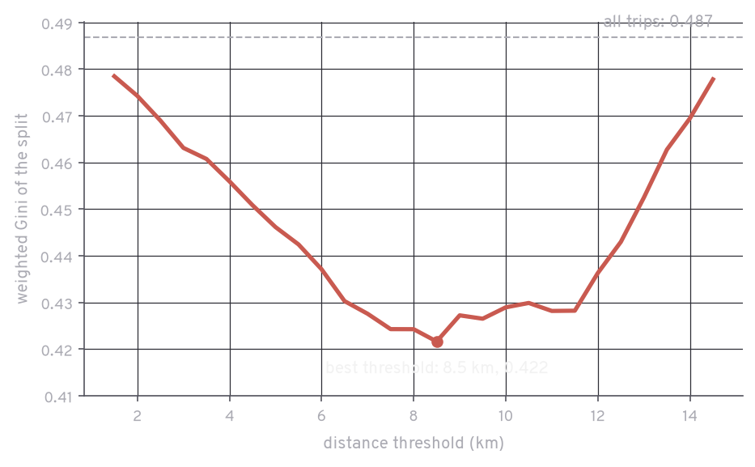

Day 3 of 140 · Phase 1: Learning from data
Decision trees and random forests
A tree picks the question that leaves the purest leaves (Gini impurity); a forest takes the vote of many trees grown on random draws of the data and of the variables; the out-of-bag error is a free validation.
1Notions
The case: seven trips, two yes-or-no questions (was it raining? was it rush hour?) and one answer to predict: late or on time. A tree asks one question, splits the trips in two, and starts again in each group. Learning means choosing which question to ask first.
| Trip | Rain | Rush hour | Late |
|---|---|---|---|
| 1 | yes | yes | yes |
| 2 | yes | yes | yes |
| 3 | yes | no | yes |
| 4 | yes | no | no |
| 5 | no | yes | yes |
| 6 | no | no | no |
| 7 | no | no | no |
Gini impurity: how mixed a leaf is
For a leaf, Gini = 1 − p_late² − p_on_time². A pure leaf (only late trips, or only on-time trips) scores 0. A half-and-half leaf scores 0.5, the worst possible with two classes. Read it as the chance that two trips drawn at random from the leaf disagree.
All seven trips together: 4 late, 3 on time, so 1 − (4/7)² − (3/7)² = 0.490.
Choosing the question
The tree tries every question, computes the Gini of each leaf, then their average weighted by the number of trips in each leaf. It keeps the question with the lowest weighted impurity.
For a number such as the distance, the tree tries every threshold between two consecutive values (the demo below does exactly that). Then it repeats the whole search inside each leaf. Left alone, it keeps splitting until every leaf is pure, down to one trip per leaf: it has learned the noise of these trips by heart, and it will do poorly on new ones.
A forest: many trees, made different on purpose
A single deep tree changes a lot if a few trips change. A random forest grows hundreds of deep trees and makes them differ in two ways, then takes their vote.
- Bootstrap: each tree learns on n trips drawn with replacement from the n trips. Some come back twice, others never.
- A random subset of variables at each split (often √p out of p variables). Otherwise every tree would ask the same strong question first and they would all make the same mistakes.
Each tree is still overfit, but in its own way. Their errors partly cancel out in the vote: the forest keeps the low bias of deep trees and loses much of their variance.
The out-of-bag error: a free validation
A bootstrap draw leaves out about 37% of the trips (the chance that a trip is never drawn is (1 − 1/n)ⁿ, close to 1/e ≈ 0.37). Each trip can therefore be predicted by the trees that never saw it. The error of these predictions, the out-of-bag error, estimates the error on new data without setting a test set aside. One limit: the trips left out are drawn at random, so for a forecast of tomorrow it shares the flaw of a random split (Day 6).
The recipe
gini(leaf) = 1 − p_late² − p_on_time²
best split of a node:
for each variable (a forest: only a random subset):
for each threshold between two consecutive values:
split the trips into left and right
impurity ← (n_left × gini(left) + n_right × gini(right)) / n
keep the split with the lowest impurity
forest:
repeat 500 times:
sample ← n trips drawn with replacement
grow a deep tree on the sample
predict: majority vote of the trees
To watch
StatQuest, Decision and Classification Trees, Clearly Explained!!!, from 3:00 to 12:15 (Gini impurity and the choice of the first question), then from 16:15 to 17:20 (a tree that overfits). Then Random Forests Part 1, from 1:00 to 8:15. What to look for: how the trips left out of each bootstrap sample become the out-of-bag test.
2Demo
Twelve made-up trips, from 1 to 12 km. Filled dots: late. Hollow dots: on time. Move the threshold: the tree would keep the lowest point of the curve.
3What I did, in my words
The variety of deep trees, each one different, together with the majority vote rather than a decision where one variable settles everything at the root node, is what fixes the accuracy problem. The out-of-bag error has to be minimized, but be wary if it is too low: it means there is a leak in time. The model imitates neighbouring trips seen in training; in service, unlike in the test on the trips that were not drawn, it cannot know the first days, since it was only trained to recognize situations where closeness in time gave it a hint. The solution is to split the sets so that it is tested on later days.

In my notebook, the forest wins on the test even though both models score 1.0 on training.
My notebook: jour-003.ipynb.
Sources
-
Video · StatQuest (Josh Starmer)
Decision and Classification Trees, Clearly Explained!!!
3:00 → 12:15 · 16:15 → 17:20
Watch from 3:00 ↗ -
Video · StatQuest (Josh Starmer)
Random Forests Part 1: Building, Using and Evaluating
1:00 → 8:15
Watch from 1:00 ↗
Notions and demo: the AI assistant. Notebook, figure and words: Akram, code written step by step with the AI assistant. English translation of his words: the AI assistant.